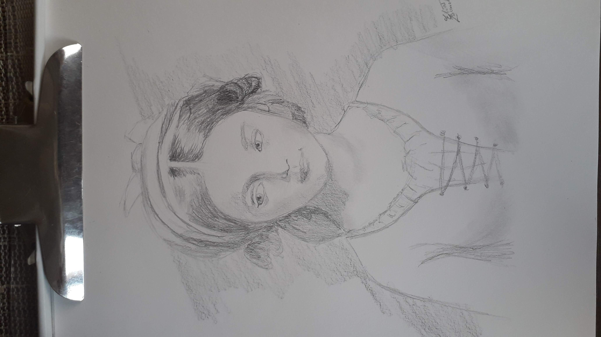
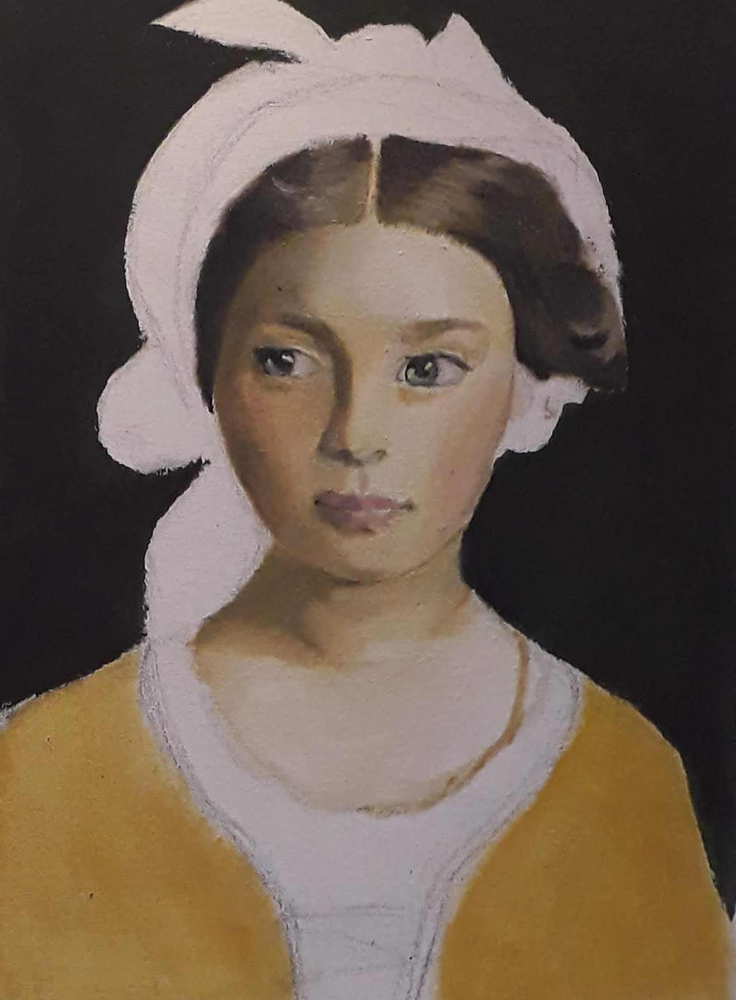
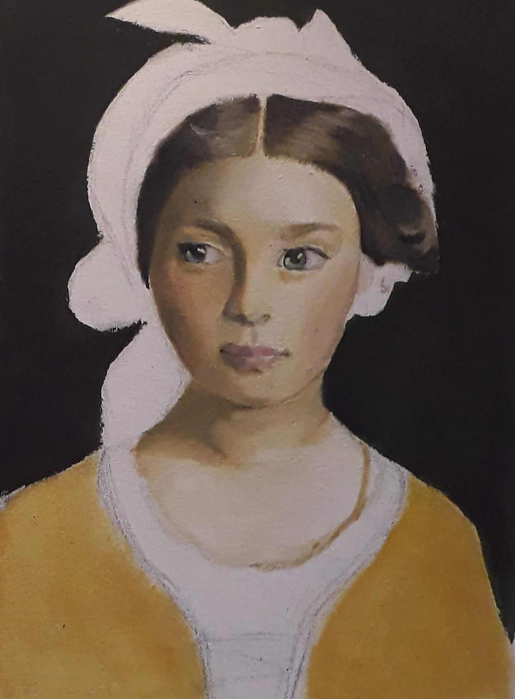
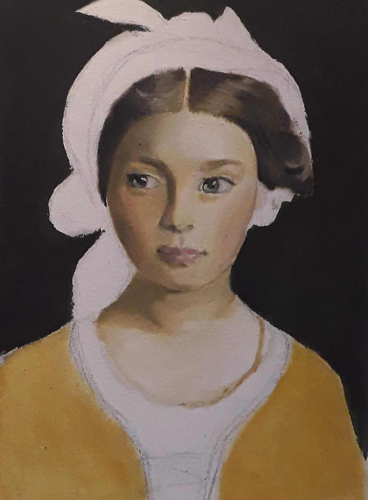

Chica del pañuelo rojo
Un cuadro sobre una chica italiana con un pañuelo rojo embuelto en la cabeza
Virgen de Fatima
Cuadro de una imagen de la virgen de fatima
Chica del pañuelo rojo


 



Un cuadro sobre una chica italiana con un pañuelo rojo embuelto en la cabeza
Cuadro de una imagen de la virgen de fatima
